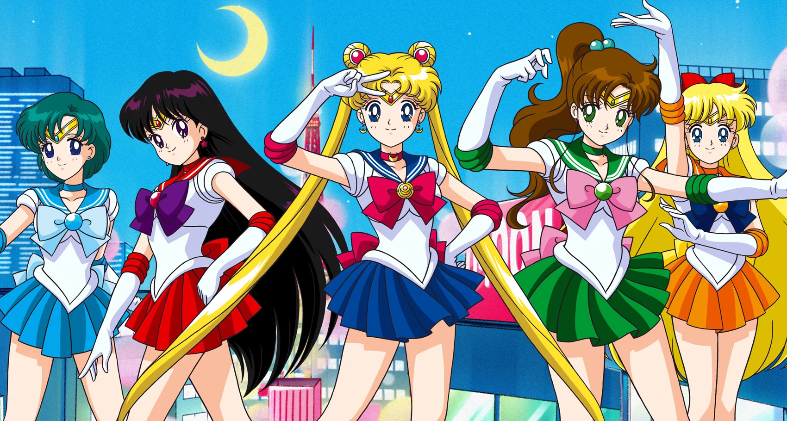

About Sailor Moon
Usagi Tsukino(月野 うさぎ, Tsukino Usagi) is the warrior of love and justice, Sailor Moon(セーラームーン, Sērāmūn). Originally from a prosperous civilization on the Moon known as the Moon Kingdom, she was reborn on Earth and re-awoke as the leader of the Sailor Senshi.
Sailor Moon and the Sailor Scouts
Characteristics
- Blood Type:O
- Hobbies:Sleeping and video games
- Favorite food:Ice cream and cake
The Sailor Scouts
Sailor Moon is the leader of the Sailor Scouts, Guardians sworn to protect the universe from the negaverse. Click on the links below to learn more about the indiviual sailor scouts